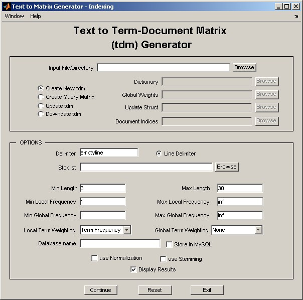

Text to Matrix Generator (TMG) is a MATLAB Toolbox that can be used for various Data Mining (DM) and Information Retrieval (IR) tasks. TMG uses the sparse matrix infrastracture of MATLAB that is especially suited for Text Miinng (TM) applications where data are extremely sparse. Initially built as a preprocessing tool, TMG offers now a wide range of DM tools. In particular, TMG is composed of six Graphical User Interface (GUI) modules, presented in Figure 1 (arrows show modules dependencies).

Figure 1: Structure and dependencies of GUI modules of TMG.
Installation
Installation of TMG is straightforward by means of the init_tmg script. In particular, the user has to perform the following steps:
-
For MySQL functionality, install MySQL and Java Connector.
-
Download TMG by filling the form from:
http://scgroup.hpclab.ceid.upatras.gr/scgroup/Projects/TMG/tmg_request.php
-
Unzip TMG_X.XRX.zip and start MATLAB. Figure 2 depicts the directory structure of the TMG root directory.
-
Change path to the TMG root directory.
-
Run init_tmg. Give the MySQL login and password as well as the root directory of the MySQL Java Connector. The installation script creates all necessary information (including MySQL database tmg) and adds to the MATLAB path all necessary directories.
-
Run gui. Alternatively, use the command line interface, type "help tmg".
TMG requires the following third party software packages:
ANLS, NNDSVD, PROPACK, SDDPACK and SPQR packages are included into TMG, while the user has to download MySQL. However, we note that MySQL related software is necessary only if the user intends to use the database support utilized by TMG. Ordinary TMG will run without any problem on a Matlab 7.0 environment without any other special software.

Figure 2: Structure of TMG root directory.
Indexing Module (tmg_gui)
TMG can be used for the construction of new and the update of existing term-document matrices (tdms) from text collections, in the form of MATLAB sparse arrays. To this end, TMG implements various steps such as:
-
Removal of stopwords.
-
Stemming (currently Porter stemming algorithm [11]).
-
Removal of short/long terms.
-
Removal of frequent/infrequent terms (locally or globally).
-
Term weighting and normalization.
-
Html filtering, processing of Postscript and PDF.
-
Store in MySQL (optionally).
The resulting tdms can be stored as "mat" files, while text can also be stored to MySQL for further procesing. TMG can also update existing tdms by efficient incremental updating or downdating operations. Finally, TMG can also construct query vectors using the existing dictionary that can be used by the retrieval and classification modules.

Figure 3: tmg_gui.
See details and a demostration of tmg_gui.
Dimensionality Reduction module (dr_gui)
This module deploys a variety of powerful techniques designed to efficiently handle high dimensional data. Dimensionality Reduction (DR) is a common technique that is widely used. The target is dual: (a) more economical representation of data, and (b) better semantic representation. TMG implements six DR techniques.
-
Singular Value Decomposition (SVD).
-
Principal Component Analysis (PCA).
-
Clustered Latent Semantic Indexing (CLSI) [16, 17].
-
Centroids Method (CM) [10].
-
Semidiscrete Decomposition (SDD) [8].
-
SPQR Decomposition [2].
DR data can be stored as "mat" files and used for further processing.

Figure 4: dr_gui.
See details and a demostration of dr_gui.
Non-Negative Factorizations module (nnmf_gui)
This module deploys a set of Non-Negative Matrix Factorization (NNMF) techniques. Since these techniques are iterative, the final result depends on the initialization. A common approach is the random initialization of the non-negative factors, however new approaches appear to result in higher quality approximations. TMG implements four initialization techniques:
-
Non-Negative Double Singular Value Decomposition (NNDSVD) [4].
-
Block NNDSVD [20].
-
Bisecting NNDSVD [20].
-
By clustering [12].
Resulting factors can be further refined by means of two NNMF algorithms:
-
Multiplicative Update algorithm by Lee and Seung [9].
-
Alternating Non-negativity-constrained Least Squares (NMF/ANLS) [7].

Figure 7: nnmf_gui.
See details and a demostration of nnmf_gui.
Retrieval module (retrieval_gui)
TMG offers two alternatives for Text Mining.
-
Vector Space Model (VSM) [12].
-
Latent Semantic Analysis (LSA) [1, 5],
using a combination of any DR technique and Latent Semantic Indexing (LSI). Using the corresponding GUI, the user can apply a question to an existing dataset using any of the aforementioned techniques and get HTML response.

Figure 5: retrieval_gui.
See details and a demostration of retrieval_gui.
Clustering module (clustering_gui)
TMG implements three clustering algorithms.
-
k-means.
-
Spherical k-means [6].
-
Principal Direction Divisive Partitioning (PDDP) [3,15].
Regarding PDDP, TMG implements the basic algorithm as well as the PDDP(l) [15] and some hybrid variants of PDDP and kmeans [19].

Figure 6: clustering_gui.
See details and a demostration of clustering_gui.
Classification module (classification_gui)
TMG implements three classification algorithms.
-
k-Nearest Neighboors (kNN).
-
Rocchio.
-
Linear Least Squares Fit (LLSF) [14].
All these algorithms can be combined with CLSI, CM and SVD DR techniques.

Figure 7: classification_gui.
See details and a demostration of classification_gui.
Acknowledgements
TMG was conceived after a motivating discussion with Andrew Knyazev regarding a collection of MATLAB tools we had put together to aid in our clustering experiments. We thank our collegues Ioannis Antonellis, Anastasios Zouzias, Efi Kokiopoulou and Constantine Bekas for many helpful suggestions, Jacob Kogan and Charles Nicholas for inviting us to contribute to [18], Elias Houstis for his help in the initial phases of this research and Michael Berry, Tamara Kolda Rasmus Munk Larsen, Christos Boutsidis and Haesun Park for letting us use and distribute SPQR, SDDPACK, PROPACK, NNDSVD and ANLS software respectively. Special thanks are due to many of the users for their constructive comments regarding TMG. This research was supported in part by a University of Patras "Karatheodori" grant. The first author was also supported by a Bodossaki Foundation graduate fellowship.
References
[1] M. Berry, Z. Drmac, and E. Jessup, Matrices, vector spaces, and information retrieval, SIAM Review 41 (1998), 335–362.
[2] M. W. Berry, S. A. Pulatova, and G. W. Stewart, Computing sparse reduced-rank approximations to sparse matrices, ACM TOMS 31 (2005), no. 2.
[3] D. Boley, Principal direction divisive partitioning, Data Mining and Knowledge Discovery 2 (1998), no. 4, 325–344.
[4] C. Boutsidis and E. Gallopoulos, SVD-based initialization: A head start on nonnegative matrix factorization, Pattern Recognition, Volume 41, Issue 4, Pages 1350-1362, April 2008.
[5] S. Deerwester, S. Dumais, G. Furnas, T. Landauer, and Harshman R., Indexing by Latent Semantic Analysis, Journal of the American Society for Information Science 41 (1990), no. 6, 391–407.
[6] I. S. Dhillon and D. S. Modha, Concept decompositions for large sparse text data using clustering, Machine Learning 42 (2001), no. 1, 143–175.
[7] H. Kim and H. Park, Non-negative matrix factorization based on alternating non-negativity-constrained least squares and the active set method, SIAM Journal of Matrix Analysis and Applications, to appear, 2008.
[8] T. Kolda and D. O’Leary, Algorithm 805: computation and uses of the semidiscrete matrix decomposition, ACM TOMS 26 (2000), no. 3.
[9] D. Lee, S. Seung, Algorithms for Non-negative Matrix Factorization, NIPS (2000), 556-562.
[10] H. Park, M. Jeon, and J. Rosen, Lower dimensional representation of text data based on centroids and least squares, BIT 43 (2003).
[11] M.F. Porter, An algorithm for suffix stripping, Program (1980), no. 3, 130–137.
[12] G. Salton, C. Yang, and A. Wong, A Vector-Space Model for Automatic Indexing, Communications of the ACM 18 (1975), no. 11, 613–620.
[13] S. Wild, J. Curry, and A. Dougherty, Improving non-negative matrix factorizations through structured initializations, Pattern Recognition, 37:2217-2232, 2004.
[14] Y. Yang and C. Chute, A linear least squares fit mapping method for information retrieval from natural language texts, In 14th Conf. Comp. Linguistics, 1992.
[15] D. Zeimpekis and E. Gallopoulos, PDDP(l): Towards a Flexing Principal Direction Divisive Partitioning Clustering Algorithms, Proc. IEEE ICDM ’03 Workshop on Clustering Large Data Sets (Melbourne, Florida) (D. Boley, I. Dhillon, J. Ghosh, and J. Kogan, eds.), 2003, pp. 26–35.
[16] D. Zeimpekis and E. Gallopoulos, CLSI: A flexible approximation scheme from clustered term-document matrices, In Proc. SIAM 2005 Data Mining Conf. (Newport Beach, California) (H. Kargupta, J. Srivastava, C. Kamath, and A. Goodman, eds.), April 2005, pp. 631–635.
[17] D. Zeimpekis and E. Gallopoulos, Linear and non-linear dimensional reduction via class representatives for text classification, In Proc. of the 2006 IEEE International Conference on DataMining (Hong Kong), December 2006, pp. 1172–1177.
[18] D. Zeimpekis and E. Gallopoulos, TMG: A MATLAB toolbox for generating term document matrices from text collections, Grouping Multidimensional Data: Recent Advances in Clustering (J. Kogan, C. Nicholas, and M. Teboulle, eds.), Springer, Berlin, 2006, pp. 187–210.
[19] D. Zeimpekis and E. Gallopoulos, k-means steering of spectral divisive clustering algorithms, In Proc. of Text Mining Workshop (Minneapolis), 2007.
[20] D. Zeimpekis and E. Gallopoulos, Document Clustering using NMF based on Spectral Information. In Proc. Text Mining Workshop 2008 held in conjunction with the 8th SIAM International Conference on Data Mining, Atlanta, 2008.